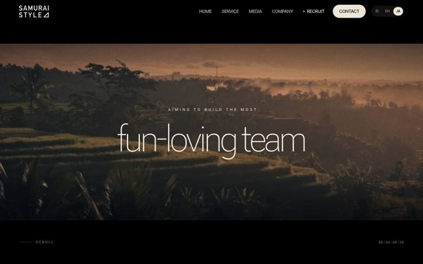
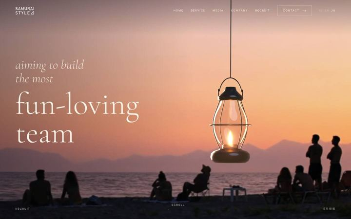
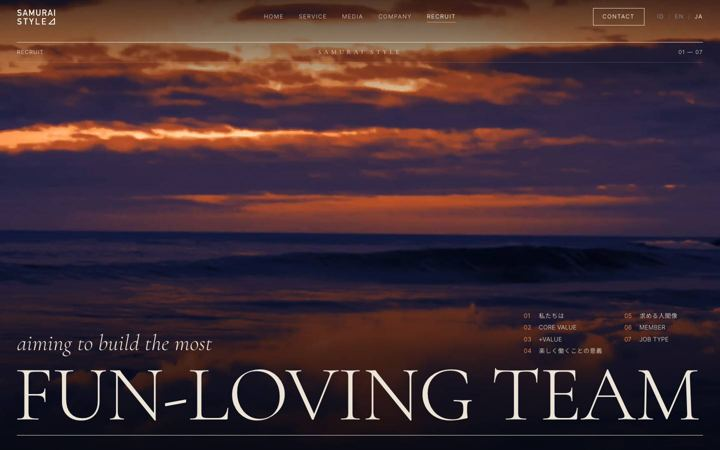
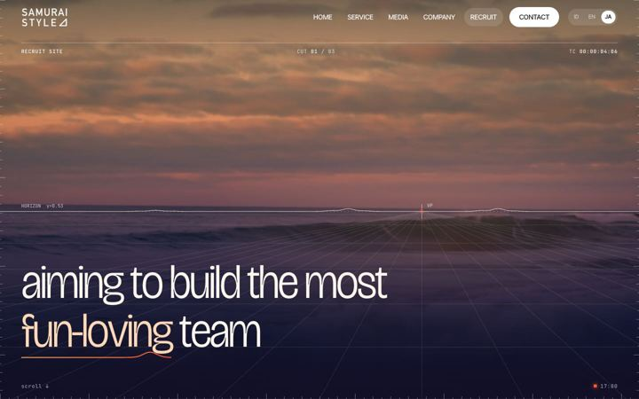

黒地にシネスコ（2.39:1）の窓が1本の光の線から上下に開き、海・夕日・棚田の環境動画を「本編の映像」として映す。動画は WebGL で暗部を紺・明部を橙に焼き、カットの継ぎ目を1.8秒のクロスディゾルブでつなぎ、ゆっくり寄る。題字は小さな字間0.52emの一行と細い大きな題字の対比で、字間が詰まりながら現れる。以降は CORE VALUE＝夕日の窓にクレジット、+VALUE＝5カットの映写（写真は同じ夕暮れの色に焼き直し、画面の下端に乗る大きな一語＋下の帯に日本語の字幕）、楽しく働くことの意義＝全画面の棚田に独白を1枚ずつ、MEMBER＝出演者クレジット（肖像は切り抜いて夜の地と残り火の光で統一、中央に来た人だけ点灯）、JOB TYPE＝海の窓に最後のカード。全面に24コマで揺れるフィルムの粒子。

参考にしたサイト
- A24（トップ） 実測：写真全面に重ねる題字225px（=15.6vw）・字間-0.05em・行送り0.8、語の下端を写真の下端に乗せる置き方。+VALUE の一語（15.6vw・-0.05em・下端揃え・長い語は枠幅に縮める）に写した。小さなラベルは10〜12pxの大文字・字間を開ける作りも全体のクレジット文字に。
- Art of the Title — Babystar (2025) のタイトル 実測：静止画1080px幅のうち、クレジットは左から2/3（66.7%）・上から17%、上に小さな役職（小文字）・下に名前（大文字）。CORE VALUE の窓のクレジット位置（左58.33%＝12列の7列目・上17%）と「小さな英字の上段＋大きな見出し」の2段に写した。
- Apple TV（映画ページ F1 The Movie） 字間を大きく開いた大文字のロックアップ（BRAD PITT／THE MOVIE）と、右下の灰色ラベル＋白い名前の出演クレジット。FV の小さな一行（字間0.52em）と、MEMBER の役職ラベル（11px・字間0.34em）＋名前の組み方に写した。
- Prologue Films 作品タイルのタイトル（THE INSTITUTE・ARTISTS EQUITY など）に共通する、黒地に字間を大きく開いた細い大文字。各節の英字ラベル（CORE VALUE・+VALUE・JOB TYPE など）の字間0.34emと、黒の余白で間を取る進め方に写した。
夕暮れの浜（今の環境動画）を背に、Blender で作ったガラスのハリケーンランタンが1つ吊られていて、ページを開くと火が灯る。スクロールで空が夕方から夜へ落ち、ランタンだけが明るさを保つ。+VALUE では夜の闇に吊った5つの裸電球が、Fun / Free / Flat / Open / Optimization の順に1つずつ灯る（フィラメントが赤から琥珀へ温まる）。灯りは写真ではなく、Blender（Cycles・被写界深度つき）で灯りごとに別々に描いた層をブラウザ（WebGL）で足し合わせて点け消ししているので、揺れ・瞬き・点灯の順番を実時間で動かせる。文字は Cormorant Garamond の細いセリフと Shippori Mincho B1、余白を広く、ネオンの発光は使わない。メンバー写真は人物だけ切り抜き、同じランタンの光で照らし直してそろえた。

参考にしたサイト
- Hermès（日本公式・エルメスの冬物語） FV：小さな物（指輪）を大きな環境の中に置き、被写界深度を極端に浅くして背景をぼかす写実の3D。見出しは30px前後で中央下に小さく置き、下を暗くする。→ ランタンを画面高さの約4割に抑えて夕暮れの浜（動画）を大きく残し、動画を軽くぼかしてランタンにだけピントを合わせた
- Igloo Inc. 1つの3Dの物を画面の中心に据え、スクロールでその物の状態（組み上がり・光り方）だけが進む。文字は四隅に小さく。→ +VALUE を画面固定にし、スクロールで電球が1つずつ点く“状態の進行”にした。右下に5語の索引、点いた語に灯りの点
- Aesop 見出しは人文系のセリフ（Zapf Humanist・31px/行送り1.33）、小さな見出し語を上に添え、ボタンは細い線の四角に矢印（Discover →）。余白が広い。→ セリフの見出し＋小さな英字ラベル＋線の四角ボタン（CONTACT →／Entry / Contact →）
- Lusion 3Dの場面の後に、144px・字間-0.02emの大きな文字を余白の中に置く。→ CORE VALUE／MEMBER／The significance of working joyfully の見出しを細いセリフで大きく、字間を詰めて置いた
カルチャー誌の特集ページのように組んだ採用ページ。色は深い紺と夕暮れの橙の2色だけ。FVは環境の動画（海・夕日・棚田）を紺→橙のグラデーションマップで塗り直し（AVFoundation＋CoreImageで書き出し）、下端に画面幅ぴったりの細いセリフ体「FUN-LOVING TEAM」、右に7節の目次。本文は2pxの罫線＋番号＋大きなセリフの見出し、明朝のリード文、2段組の本文、Fig.番号だけの小さなキャプション。写真は9枚を選んで同じ夜の色調にそろえ（顔が沈まない程度に7割混ぜ＋粒子）、+VALUEは左の写真が固定されて読んでいる指針に合わせて切り替わる見開き、楽しく働くことの意義は隙間なしの2枚並び。MEMBERは7人を切り抜いて紺→生成りのモノトーンにし、地平線の橙がにじむ紺の地に置いた肖像特集。フッターは夕暮れのシルエットの場面に画面幅の「CONTACT →」。

参考にしたサイト
- Kinfolk 実測：左右の余白34px／特集タイトルは細いセリフの大文字を画面幅ぴったりに合わせる（TAKING PLAY SERIOUSLY）／節の見出しの下に2pxの罫線と右寄せの小さな文字／写真のすぐ下に13pxのキャプション／写真の左下に重ねる見出し、右に目次。FVの画面幅ぴったりの見出し＋右の目次、節見出しの2px罫線、写真下のキャプションに写した
- Acne Studios 隙間なしで画面を半分ずつ使う2枚の写真と、写真の左上に置く12pxのキャプション。楽しく働くことの意義の2枚並びに写した
- 032c 1pxの罫線で区切った上部の帯（マストヘッド）と、大文字＋字間の広い小さなラベル。FV上部のRECRUIT／SAMURAI STYLE／01—07の帯に写した
トップ本線（top-v2）の宇宙・製図の細い線・朱1点・細→太く伸びる見出しを、採用では夕方17:00→夜24:00の色にした版。地は固定のキャンバスで、スクロールに合わせて夕暮れの橙から夜の紺へ移り、星が少しずつ出る。右端に時刻の目盛り（17〜24時）があり、各節の見出しの右端にもその節の時刻が出る。FVは環境の動画（海・夕日・棚田）を全面に流し、夕方の色に焼いた上に、地平線・消失点・パースの製図の線を重ねる。地平線は動画のカットごとに位置を合わせ、拍（0.6秒）に合わせて跳ねる。fun-loving の文字も小節の頭で1字ずつ跳ね、下線の山が左から右へ走り、消失点に朱が点る。私たちは＝日本とインドネシアをつなぐ弧（FIG.01）、CORE VALUE＝奪い合うパイに感謝・高揚感・笑顔の輪が加わって円が大きくなる図（FIG.02・スクロールで進む）、+VALUE＝Oxide の採用ページの Hiring Process と同じく左に固定の線図を置き、読んでいる指針の図形だけが動いて朱が点る（Fun＝点が跳ねる／Free＝線が自由に伸びる／Flat＝ピラミッドが一列に並ぶ／Open＝括弧が開いて行き来する／Optimization＝ばらばらの板が1本に揃う）。写真は網点から組み上がり、触ると色がつく。楽しく働くことの意義＝17〜24時の時間の軸の上で日々の積み重ねが伸び、利他と利己の線が揃っていく（FIG.04）。求める人間像＝teenage engineering の朱の番号つき一覧。MEMBER＝7人の星座（全員が全員と線でつながる）＋見えると灯りが点るように紙が光り、網点から顔が組み上がる。JOB TYPE＝Oxide の Open Positions の枠つきの行。フッターはトップと同じ CONTACT の横線の束。

参考にしたサイト
- Oxide Computer — Careers（実際に開いて撮影・実測） Hiring Process の作り（左に縦の線図、各段に『←──── [1]』の矢印と番号、右に段落）を +VALUE に写した。実測：地 oklch(0.162 0.01 260)＝ほぼ黒の紺、線図とリンクは琥珀色 oklch(0.67 0.13 78)、ラベルは等幅 12px・字間 0.64px・大文字、罫線は 1px の暗いグレー。琥珀＝夕方の色として線図の矢印・役職・下線に使った。Open Positions の枠つき1行（職種｜条件｜→）を JOB TYPE に写した。撮影：ref_r4/oxide_*.jpg
- teenage engineering 黒地に朱の番号（01 VARISPEED…）で並べる一覧を、求める人間像の番号つきの行に写した（home_bench/teenage）
- poolside フッターで社名を横線の束で描く手法（トップ本線と同じ）と、絵を細枠のパネルに入れて＋の見当を付ける作り（home_bench/poolside）
- サムライスタイル トップ本線 top-v2.html FVの Bricolage の細い字が立ち上がる演出、節の見出し（ラベル行＋細く縮んだ字が広く太く伸びる Roboto Flex）、製図の地（細い格子・縁の目盛り）、ゼロサム→プラスサムの図、網点から組み上がる写真、CONTACT の横線の束をそのまま引き継ぎ、色だけ夕方〜夜に